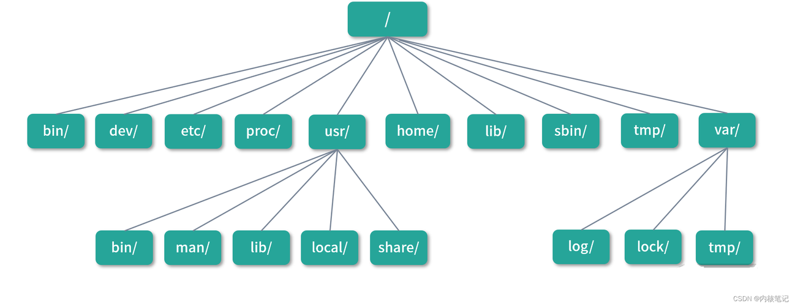

Linux各大目录作用
- / (Root，根目录)：Linux文件系统的顶级目录，所有其他目录和文件都位于此目录下。
- /bin (Binaries，二进制文件)：包含用户级命令的二进制文件，普通用户都可执行。
- /sbin (System binaries，系统二进制文件)：包含系统级命令的二进制文件，通常只有超级用户可以执行。
- /home：普通用户的家目录，每个用户都有自己的子目录，通常以用户名命名。
-
/root：超级用户root的家目录。
- /etc (Etcetera，等等)：包含系统配置文件。
- /var (Variable，变量)：包含系统运行时要改变数据的文件，如日志文件等。
- /usr (Unix Software Resource，Unix操作系统资源)：包含用户级软件，如二进制文件、库文件、文档和二级开发程序等。
- /tmp (Temporary，临时)：存放临时文件。
- /dev (Devices，设备)：包含设备文件，用于访问硬件设备。
- /proc (Process，进程)：包含系统运行时的进程和内核信息。
- /sys：包含系统管理的硬件设备信息。